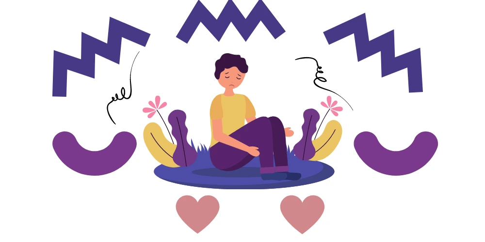
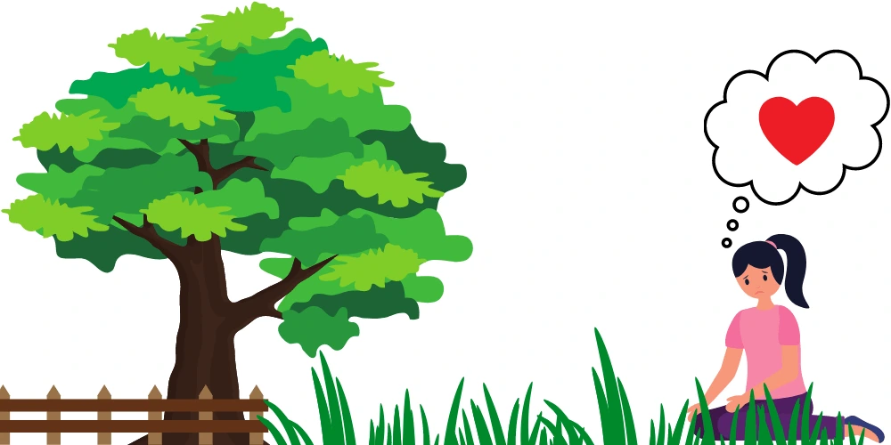

Popularly known as PTSD, Post-traumatic stress disorder is a mental health problem. PTSD may occur after an extremely traumatic event happens. It is not easy to help someone who is going through PTSD. It can be difficult for people to come up with ways on how to sympathize or help someone with PTSD. Nevertheless, it is not impossible to help someone even if one has never experienced such a tragic event.
Do you have a friend or a family member who is suffering from PTSD?

Trauma and stress, are these two the same? If not, what’s the difference?
Trauma and stress are related, but they are not the same thing.
Trauma, on the other hand, comes from the feeling of being overwhelmed. It occurs when an individual’s capacity to handle the stress is minute. Trauma occurs when the environmental circumstances surrounding a person is perceived to be bigger than what that person can handle.
When feeling overwhelmed, the body automatically retreats to a survival mode. This is a response of the body in order to deal with the threat. just as it does during stress. However, when the threat is too great to bear stress turns into trauma. This is especially true when the stress endures over a long period of time. To further explain, a person being cruelly taunted may not fight back. Why? Well, if they do, they may get into legal trouble and make the threat even worse. The act of not fighting back may be the smart thing to do. However, the overall result is the body’s automatic survival response. It is ineffective against the threat.
Can PTSD be controlled?
It is vital to remember that whoever suffers from PTSD will not always have control over his or her behaviour. Therefore, it is paramount that we extend our understanding and not take their actions personally. There are different ways to help those who suffer from PTSD. PTSD is not a life sentence. We can always try to help those we love who suffer from PTSD. This is possible only if we understand what to say to those who suffer from it. PSTD is not and should not be a life stopper. With the right and appropriate professional mental health care program, people can and do get their life back – eventually. “How can I help? What do I do? What can I say to someone who suffers from PTSD?” These are some questions that you may ask yourself? Here is a brief guide on how to help someone with PTSD.
The Inner Workings of PTSD
Common reactions include shock, rage, nervousness, anxiety, fear and guilt follow after a tragic event. For most people, these reactions will eventually fade over time. However, for people with PTSD, these feelings endure for longer than a month. The feelings will persist and even intensify over time, inhibiting sufferers from leading their normal lives. Families of victims and first responders like emergency rescue personnel can also experience PTSD, even though they didn’t directly experience a tragedy.
Learn the Symptoms of PTSD
Unless we know what to look for, signs and symptoms, we will never be able to help those who suffer from PTSD. It is vital to learn how to recognize the symptoms. Easily startled, having difficulty in sleeping, and finding it hard to concentrate, are but a few symptoms of PTSD. Intense emotions, as well as outbursts of anger, is also noticeably present with persons with PTSD. Relating to others is also difficult because the expression of emotions is a struggle. Other physical symptoms may be as follows:
- Increased heart rate
- Erratic blood pressure
- Rapid breathing
- Diarrhea
- Nausea
- Easily startled
- Sudden panic attacks
- Uneasy, can’t stay still
There are also mental signs to watch out for when trying to help someone who is dealing with PTSD and these are:
- Flashbacks
- Nightmares
- Hallucinations
- Disturbed sleep
- Irritability or aggression
- Lack of concentration
- Self-blame
- Expressing guilt or shame
Loved ones who understand PTSD are capable of giving a compassionate response. However, putting up with hurtful or dangerous behaviours is not acceptable. Some PTSD survivors may seem collected on the outer facade, but underneath is a different story. Not all PTSD victims manage to resolve their trauma on their own. Some require professional help. Either is welcome for as long as the PTSD victim is able to resolve the source of trauma. If left unresolved, some PTSD victim eventually loses their cool over the smallest conflict such as a fender bender.

How to Talk to Someone with PTSD
Being clear and to the point is essential when talking to those who suffer from PTSD. Staying positive, and not forgetting to be a good listener is key, too. It is important to repeat what you have understood and definitely ask questions when more information is needed. It is important that we never interrupt or argue with a PTSD victim when they talk. Voicing our feelings as the listener in a clear fashion is very important. Never assume that your loved one knows how you feel if you don’t express it. PTSD is extremely hard on everyone who is involved. For those who are involved with the victim, never give your advice unless you are solicited for it.
Finding the Best PTSD Treatment
It’s been noted that medication and cognitive behavioural therapy do work best for trauma victims. One helpful therapy is called “exposure therapy.” Exposure therapy exposes a PTSD victim gradually to his or her trigger of fear. However, it must be noted that this therapy is done in a safe environment.
Help exists for those who suffer from PTSD and for those who wish to support those who suffer from it. Options are available. Hospitals can be contacted, or pay your GP for advice. A check with local mental health facilities should also be considered. Support groups can also provide useful information. If professional mental health care is impossible due to distance or due to other adverse events such as a pandemic, telehealth mental health care service can be considered.